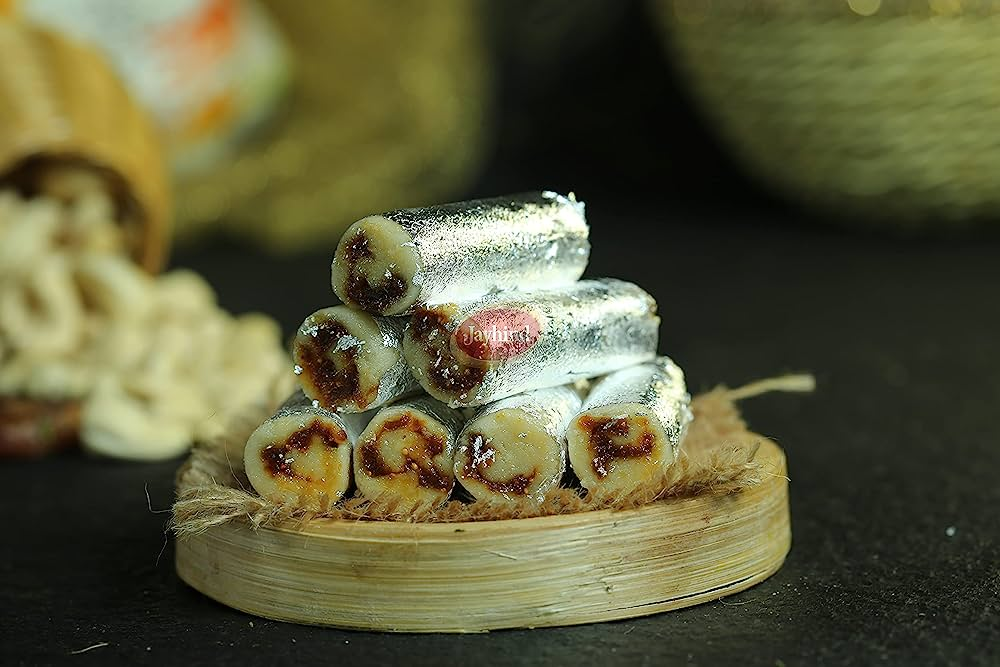
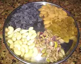
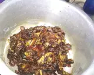
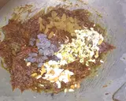
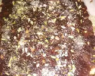
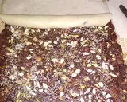

|
|
- 250 ગ્રામ કાજુ
- 150 ગ્રામ અંજીર
- 150 ગ્રામ ખજુર
- 200 ગ્રામ ડ્રાયફ્રુટ (કાજુ,બદામ કિસમિસ,પિસ્તા, કાળી દ્રાક્ષ)
- 2 ચમચી ખસખસ
- 3 ચમચી ઘી
- 125 ગ્રામ ખાંડ
- 2 ચમચી મિલ્ક પાઉડર
- 1/2 પાણી
|
|
સૌપ્રથમ એક તપેલીમાં થોડું હૂંફાળું ગરમ પાણી કરીને તેમાં અંજીર ને પાંચ મિનિટ પલાળી દો
|  |
પછી ખજૂરના ઠળિયા કાઢીને એક પેનમાં ઘી મૂકીને ખજૂર અને અંજીરને સોફ્ટ કરી લો પછી તેમાં ઉપર મુજબના ડ્રાયફ્રૂટ્સ ચોપ કરીને અડધા નાખીને મિક્સ કરી લો
|  |  |
પછી એક પેનમાં ખાંડ લઇ તેમાં થોડું પાણી નાખીને એક તારની ચાસણી બનાવી ને તેમાં કાજુનો ભૂકો ઉમેરી બે ચમચી મિલ્ક પાઉડર અને એક ચમચી ઘી ઉમેરી દેવું પેન માંથી છૂટું પડવા લાગે ત્યાં સુધી હલાવવું પછી ગેસ બંધ કરી દેવો અને થોડીવાર માટે ઠંડું પડવા દેવું
Step4:
ત્યારબાદ તેના ઉપર ખજૂર - અંજીરનું મિશ્રણ પાથરી દેવું પછી તેની ઉપર ડ્રાયફ્રુટ્સ અને ખસ ખસ ના બી છાંટી ને વેલના મદદથી ફરી એકવાર વણી લેવું
|  |
પછી તેનો રોલ વાળીને થોડીવાર માટે સેટ થવા મૂકી દો દસ મિનિટ પછી તેના ચપ્પુની મદદથી કાપા પાડી લો તો તૈયાર છે આપણા કાજુ અંજીર રોલ
|  |